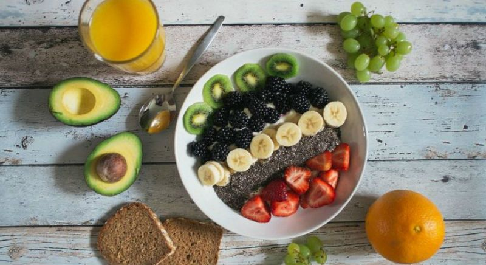

¿Cómo conservar frutas y verduras: en la nevera o fuera?
Te hemos revelado algunos trucos para conservar frutas y verduras (prestando especial atención a la conservación de cebollas, fresas y naranjas) e incluso te hemos enseñado a congelar verduras en casa. Hoy, te contaremos cómo conservar frutas y verduras. No todas las frutas y verduras necesitan frío, por lo que si eres de los que duda si guardar la fruta en la nevera o fuera, este artículo te interesa.
¿Qué hacer antes de consumir frutas y verduras de temporada?
En el reportaje sobre cómo conservar frutas y verduras, la OCU da algunos consejos con los que estamos plenamente de acuerdo: lava las frutas y verduras cuando las vaya a utilizar (nunca antes). Hazlo bajo el grifo (no las dejes en remojo) frotando bien la piel para eliminar los residuos, y aprovecha este momento para eliminar las zonas dañadas. En el reportaje sobre cómo conservar frutas y verduras, la OCU da algunos consejos con los que estamos plenamente de acuerdo: lava las frutas y verduras cuando las vaya a utilizar (nunca antes). Hazlo bajo el grifo (no las dejes en remojo) frotando bien la piel para eliminar los residuos, y aprovecha este momento para eliminar las zonas dañadas.
3 Consejos para cuidar nuestra alimentación en verano
1. Mantenernos hidratados Seguro que has oído alguna vez que el ser humano necesita beber unos dos litros de agua al día. Sin embargo, durante los meses de verano, puede que esta cantidad no sea suficiente, ya que con el calor, nuestro cuerpo pierde mucha agua. Por ello, te recomendamos que, además de los dos litros de agua, bebas zumos, limonadas, infusiones, refrescos no azucarados… Si quieres algo de inspiración, hecha un vistazo a los nuestros artículos de la sección de batidos y zumos. 2. Aumentar el consumo de frutas y verduras: A estas alturas, seguro que ya sabes que las frutas y las verduras contienen mucha cantidad de agua, por lo que son ideales para mantenernos hidratados. Además, contienen vitaminas, minerales y fibra, lo que nos aportará un montón de nutrientes. Eso sí, intenta consumir frutas y verduras de temporada. 3. Cuidar nuestra alimentación en verano: En verano es preferible realizar cinco comidas ligeras (desayuno, almuerzo, comida, merienda y cena) que tres copiosas. Por eso, te recomendamos que dejes de lado los potajes, los embutidos y las salsas con mucha grasa y apuestes por alimentos nutritivos ligeros cocinados de manera sencilla (a la parrila, a la plancha, al horno, al vapor, con salsas ligeras como la vinagreta…).